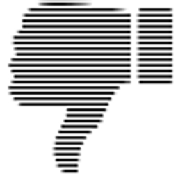
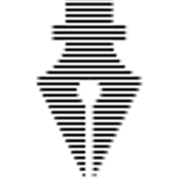

Documentation: Threat or Menace?
Tech Writing for NerdsHow to write good-enough docs
...so co-workers don't ask weak questions
...but still ask interesting questions.
@lahosken
Trust No Doc

Welcome!
You don't want to reinvent wheels.
The nerd next to you is tired of questions.
Docs will help, right? Hmm...
You looked for the doc but you found...
- ...nothing
- ...three conflicting docs
- ...a decoy
How do we Dig Out?
![[Picture of a Trowel]](src/digout_256.png "...or were we supposed to _stop_ digging? I fergit")
Who is the audience?
What are they trying to do?
Audience Creep
Who is the audience?
- users and devs and... and...
- everybody who cares about...
Uh-oh. Sounds like audience creep
Scope Creep for Docs
- Can't find what you need
- Can't recognize it
- Hard to maintain
Pause and Reflect when...
- About to start writing
- About to edit something
- Emerging from writing frenzy
How to Refactor?
- At doc top, 140-character summary
- Split part into a sub-doc
- Cross-link between old and new docs
Owning a Good Doc

Minimum Docs
- 140-ch. summ.
- Good for...
- Not good for...
- Contact info
- Links to more
- What folks ask
At the top of any page
- 140-character topic summary
- Questions → myteam@wherever.com
- Links to related documents
How to write high-quality?
- (a) Perfect the first time* or
- (b) Peer review
Good Reviewers: Noobs. Experts. Yourself tomorrow morning.
* Yes, that's a joke.
Handling Suggestions
- Answers go into Doc
- Misdirected reader? Link to right Doc
- N00b in l33t doc? Link to background
"Findability"
![[Picture of sign post]](src/sign_256.png "SEO for intranets")
Get Folks To Your Doc
- Put your doc with other docs
- Try to find it, link from there
- "Foo HowTo" "Bar PlayBook"